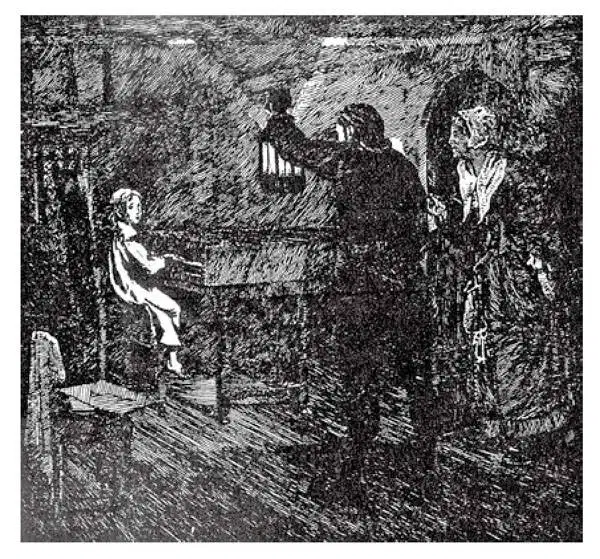

79
From Pan and His Pipes to the Phonograph
从森林之神的排箫到留声机

Frogs croak.
Cats meow.
Dogs bark.
Sheep bleat.
Cows moo.
Lions roar.
Hyenas laugh.
But only birds and people sing .
And people can do what birds cannot.
They can also make music out of things .
HAVE you ever made a cigar-box fiddle or a pin piano or musical glasses?
In the long-ago story-book times, Apollo took a pair of cow horns and fastened between them seven strings made from the cow's skin. This was called a lyre . These strings he picked with his finger or with a quill, making a little tinkling sound that could hardly have been very beautiful. Yet Apollo's son, Orpheus, is said to have learned from his father to play so beautifully on the lyre that the birds and wild beasts and even trees and rocks gathered around to hear him.
Pan, the god of the woods, who had goat's horns, and ears and legs and feet, tied together several whistles of different lengths and played on these as you might on a mouth organ. This instrument was called Pan's pipes .
The lyre and Pan's pipes were two of the earliest musical instruments. The first was a stringed instrument, the second a wind instrument. The long strings and long pipes made low notes; the short strings and short pipes made high tones.
From Apollo's lyre we get the piano with its many, many strings. Did you ever look at the inside of a piano and see the many strings of different lengths? They are, however, not picked as the strings of a lyre or harp are picked, but hammered by little felt-covered blocks as you touch the keys.
From Pan's pipes we get the great church organ with its pipes like giant whistles. You don't, of course, blow the pipes with your mouth as you do a whistle. The pipes are so big you must blow them with a machine.
We know what the instruments in olden times were like, but we don't know what the music that people made was really like; there were no phonographs or tapes to bottle up the sounds and, when uncorked a thousand years later, to pour forth the old notes once again. The music went off into thin air and was lost.
It was not until about the Year 1000 A.D. that music could even be written down. Before then all music was played by ear , for there was no written music. A Benedictine monk named Guy, or, in Italian, Guido, thought of a way to write down musical notes, and he named the notes do, re, mi, fa, and so on. These were the first letters of the words of a hymn to St. John which the monks sang like the scale.
Another Italian is sometimes called the Father of Modern Music. His name is Palestrina, and he died in 1594. He set the church service to music, and the pope ordered all churches to follow it, but the people didn't like his music very much; that is, it was not what we call popular .
It was not until a hundred years later—that is, about 1700—that the first great European musician lived who wrote music that was really popular, that the people in Europe and America loved, and that we still love today.
He was a German named Handel. His father was a barber, a dentist, and doctor, and he wanted his boy to become a great lawyer. But the only thing the boy liked was music.
In those days there were no pianos. There was a little instrument with strings which was played by touching keys. This was called a clavichord. Sometimes it had legs like a table. Sometimes it had no legs and was just laid on a table.

Handel is found in the attic （韩德尔被发现在阁楼上）
Handel, though only six years old, got hold of one of these instruments, and, without anyone finding out about it, he had it put up in his room in the attic of his house. After everyone had gone to bed at night, he would practice on this clavichord until late, when he was supposed to be in bed. One night his family heard sounds up under the roof. Wondering what it could be, they took a lantern, and, quietly climbing the attic stairs, they suddenly opened the door, and there sat little Handel in his nightclothes on a chair with his feet reaching only half way to the floor, playing on the clavichord.
After that, Handel's father saw it was no use trying to make his son a lawyer. He got teachers for him, and before long the boy amazed the world with his playing. He went to England, lived there, became an Englishman, and when he died the English people buried him in Westminster Abbey, a church in which famous Englishmen were buried.
Handel set parts of the Bible to music. These songs with the Bible words to be sung by a chorus of voices were called oratorios , and one of these oratorios named The Messiah is sung almost everywhere at Christmas time. In addition to his religious music, Handel wrote forty-six operas!
Living at the same time as Handel was another German musician named Bach. Bach played divinely on the organ as Handel did on the clavichord and wrote some of the finest music for the organ that ever had been written. Strange that both Handel and Bach went blind in their old age, but to them it was sound, not sight, that counted most. Which do you think “counts more”?
Almost all musical geniuses have been musical wonders when they were still babies. They have been great musicians even before learning to read and write.
One such genius was born just before Bach and Handel died. He was an Austrian named Mozart.
Mozart, when only four years old, played the piano wonderfully. He also wrote music—composing, it is called—for others to play.
Mozart's father and sister played very well, so the three went on a concert tour. Mozart, the boy wonder, played before the empress, and everywhere he went he was treated like a prince, petted and praised and given parties and presents.
He grew up and married, and ever after he had the hardest kind of time trying to make a living. He composed all sorts of things, plays with music called operas , and symphonies , which are written for whole orchestras to play; but he made so little money that when he died he had to be buried where they put people who were too poor to have a grave for themselves alone. People afterward thought it a shame that such a great composer should have no monument over his grave, but then it was too late to find where he was buried. A monument was put up, but to this day no one knows where Mozart's body lies.
A German named Beethoven had read the stories of the boy wonder, Mozart, and he thought he, too, would like to have a boy wonder to play before kings and queens. When his son was only five years old, he kept the boy practicing long hours at the piano until he became so tired that the tears ran down his cheeks. But Ludwig Beethoven, as he was named, finally came to be one of the greatest musicians who have ever lived. He could sit at the piano and make up the most beautiful music as he went along—improvise , as it is called—but he was never satisfied with it when written down. Time and time again he would scratch out and rewrite his music until it had been rewritten often a dozen times.
But Beethoven's hearing began to grow dull. He was worried that he might lose it entirely—a terrible thing to happen to anyone, but to one whose hearing was his fortune, nothing could be worse. At last he did become deaf. This loss of his hearing made Beethoven hopelessly sad and bad-tempered, cross with everything and everybody. Nevertheless, he didn't give up; he kept on composing just the same, even after he could no longer hear what he had written.
Another great and unusual German musician named Wagner lived until 1883. Though he practiced all his life, he never could play very well. But he composed wonderful operas, and he wrote not only the music but the words, too. He took old Germanic myths and fairy tales and made them into plays to be sung to music. At first some people made fun of his music, for it seemed to them so noisy and “slam-bangy” and without tune. Now people make fun of those people who don't like it!
I have told you in other places of painters and poets, or architects and wise men, of kings and heroes, of wars and troubles. I have put this story of music of all ages in one chapter, which I have tucked in here between the acts, to give you a rest for a moment from wars and rumors of wars.
When I was a boy I never heard any great musicians play. Now you and I can turn on the record, tape, or CD player anytime and hear the music of Palestrina or Mozart, of Beethoven or Wagner, of dozens of other masters, played or sung to us whenever we wish. No caliph in the Arabian Nights
could command such service for his pleasure!
【中文阅读】
青蛙呱呱。
猫儿喵喵。
狗儿汪汪。
羊儿咩咩。
母牛哞哞。
狮子吼。
唯有鸟儿和人把歌唱。
鸟儿做不到的人做到。
他们还利用万物把乐奏，真奇妙。
你曾经用雪茄盒子做小提琴或者用大头钉弹钢琴或者用玻璃杯演奏音乐吗？
在很久以前的神话故事时代，阿波罗取了一对牛角，在牛角之间系上七根用牛皮做成的弦。这个乐器叫做“里拉琴”。他用手指或羽毛管拨弄这些琴弦，发出一点叮当响声，声音算不上美妙。不过据说阿波罗的儿子奥菲士从父亲那里学会了弹奏里拉琴，他演奏的音乐优美动听，连各种鸟兽木石都围绕着他，聚在一起倾听他弹奏。
潘神，森林之神，长着山羊的角、耳朵和腿脚，把几根长短不同的笛子拴在一起，用这吹奏出曲子，就像你吹口琴那样。这种乐器被称为“排箫”。
里拉琴和排箫是最早的两种乐器。前一种是弦乐器，后一种是管乐器。长弦和长管发音低沉，短弦和短管音调高亢。
从阿波罗的里拉琴演变成我们今天有许许多多琴弦的钢琴。你看到过钢琴的内部，见到过许多长短不同的琴弦吗？不过，它们不是像里拉琴或竖琴的琴弦那样被拨弄，而是当你按下琴键时，毛毡覆盖的小木槌敲击它们发出声音。
从潘神的排箫演变成我们今天大型的教堂管风琴，这种管风琴有着形似巨大哨子的音管。很显然，你无法像吹哨子那样用嘴吹这些音管。这些音管大到你只得用机器向管内鼓风来演奏。
我们知道古时候的乐器像什么样儿，但是我们不知道那时人们创作的音乐听起来到底像什么；那时没有留声机录音或磁带把声音录下来，就好像可以装在瓶子里，等千年以后拔去瓶塞，再一次把古老的音符倒出来。过去的音乐可惜不能贮藏，飘散到稀薄的空中，永远消失了。
直到公元1000年左右，音乐才能够用笔记下来。之前，所有的音乐都“凭听觉记忆”演奏，因为当时没有乐谱。一位名叫盖伊或者在意大利语中名叫圭多的本笃会修士，想了一个记录音符的方法，他把这些音符命名为哆、来、咪、发等。“哆、来、咪、发……”是一首献给圣约翰的赞美诗的歌词的开始部分的字母，修士们由低到高咏唱这些字母。
另一个意大利人有时被称为“现代音乐之父”。他名叫帕莱斯特里纳，死于1549年。他为教堂礼拜仪式配乐，教皇命令所有的教堂都要效仿他的配乐，但是人们却不大喜欢他的音乐；换句话说，按我们现在的说法，它不怎么“流行”。
直到百年后——也就是说，大约公元1700年——第一个伟大的欧洲音乐家才出现，他写出了真正流行的音乐，受到欧洲人和美国人的喜爱，就是在今天依然很受欢迎。
他是个德国人，叫韩德尔。他的父亲是理发师，还兼给人看牙、治病，他希望自己的儿子将来做个大律师。但是这个男孩唯一喜爱的是音乐。
那时还没有钢琴。有一种靠敲击琴键来演奏的小型弦乐器，叫做“击弦键琴”。有的击弦键琴像桌子那样有腿。有的没有腿，就放在桌上。
韩德尔，尽管只有6岁，却得到一个这样的乐器，他将乐器放在房屋阁楼上自己的房间里，不让任何人发现。晚上每个人都睡觉以后，他就在这架击弦键琴上练习直到深夜，这时别人都以为他早入睡了。一天夜里他的家人听到楼上屋顶下有声音。他们感到纳闷，不知道那是什么，就提着一盏灯，悄悄爬上阁楼楼梯，他们突然打开门，只见穿着睡衣的小韩德尔坐在椅子上，脚还够不到地板呢，正在弹着击弦键琴。
从那以后，韩德尔的父亲意识到想要让儿子成为律师不行了。他为韩德尔请来老师，不久这个男孩的音乐演奏就震惊了世界。他后来去了英国，定居在那里，成了英国人，他去世后，英国人把他葬在了威斯敏斯特教堂，这座教堂是英国著名人物的下葬之地。
韩德尔为圣经部分内容谱曲。这些曲子配上圣经里的词由众人齐唱，这种表演叫做“清唱剧”，其中一出名为“弥赛”的清唱剧在圣诞节期间几乎到处都在演唱。除了宗教音乐之外，韩德尔还写了四十六部歌剧！
与韩德尔同一时期，还有一位德国音乐家名叫巴赫。巴赫演奏管风琴绝妙非凡，就像韩德尔演奏击弦键琴一样，而且谱写了一些迄今为止最优美的管风琴乐曲。奇怪的是，韩德尔和巴赫到了晚年双目都失明了，但是对他们来说，最重要的是听觉而不是视力。你认为哪一个“更重要”呢？
几乎所有的音乐天才在幼年时期就是音乐神童了。甚至在他们学会读书写字之前，就已经成为伟大的音乐家了。
有一位这样的音乐天才就在巴赫和韩德尔去世之前诞生了。他是奥地利人，名叫莫扎特。
莫扎特，才4岁时钢琴就弹得极好。他也作曲——现在叫做谱曲——供他人演奏。
莫扎特的父亲和姐姐都是优秀的钢琴家，所以他们三个人举办了一次巡回音乐会。神童莫扎特在女皇面前演奏，无论他到哪里都受到王子般的款待，人们宠爱他、赞扬他，为他举办宴会，还给他很多礼物。
自从他成年结婚后，为了谋生，一直过着最艰难的日子。他创作各种类型的音乐，包括被称为“歌剧”的音乐剧和“交响乐”。交响曲是专门为整个管弦乐队演奏而谱写的；但是他挣的钱还是太少，去世时他不得不和穷人埋在一起，那些穷人都太穷了，没有属于自己的墓地。后来人们认为这样一位伟大的作曲家竟然在自己的坟墓前没有墓碑真是太不像话了，但是此时去找他的埋葬地点，已经太晚了。人们为他立了一座纪念碑，但是直到今天也没有人知道莫扎特的遗骨在哪里。
一个名叫贝多芬的德国人读过了神童莫扎特的故事，觉得也想要生一个神童，能在国王和王后面前演奏。当他儿子只有5岁的时候，他让孩子长时间地练习弹钢琴直到孩子累得眼泪顺着脸颊流下来。但是路德维格•贝多芬，这是孩子的名字，最终成了有史以来最伟大的音乐家之一。他能够坐在钢琴前，一边弹奏一边创作出最 美妙的音乐——这叫做“即兴创作”——但是乐曲被记录下来之后他却从未满意过。他总是一遍又一遍地修改、重写，直到满意为止。一首乐曲经常要修改十几遍。
但是贝多芬的听觉开始渐渐不灵了。他很担心会完全丧失听力——发生在任何人身上都是一件可怕的事情，但是对于一个听力就是他的命运的人来说，再没有比这更糟糕的了。最后他完全失聪。丧失听力让贝多芬悲伤绝望、脾气暴躁，动不动就发火。然而，他没有放弃依然坚持作曲，尽管他再也听不到自己创作的乐曲了！
还有一位伟大的、与众不同的德国音乐家叫瓦格纳，他死于1883年。尽管他一生都在练习演奏，但是他始终不能演奏得很好。可是他创作了令人惊叹的歌剧，另外他不仅作曲还作词。他以古老的日耳曼民族的神话和童话故事为蓝本，创作出歌剧。起初有些人取笑他，因为他们觉得他的音乐似乎很喧闹，乱哄哄的，没有曲调。而如今人们却反过来取笑那些不喜欢它的人了！
我在前面的章节介绍过画家和诗人，或建筑师和智者，还讲过国王和英雄，以及战争和灾难。我现在把各个时代的音乐故事放在一章里，夹在历史故事中，好让你从战争和战争的传闻中走出来休息一会儿。
我小时候，从未听过哪个大音乐家的演奏。现在每当我们想听音乐，你和我就可以随时打开唱机、录音机，或者光盘播放机，聆听音乐家演奏或演唱，聆听帕莱斯特里纳或莫扎特的音乐、贝多芬或瓦格纳的音乐，以及其他许多大师的音乐。就连《一千零一夜》里面的哈里发也无法要求别人向他提供这样的享受！